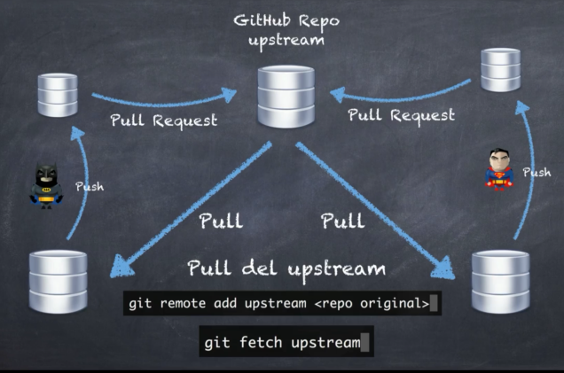

Lo que vamos aprender continuación es muy usado cuando nosotros tenemos
algún compañero de trabajo nuevo que no confiamos mucho en él todavía como para darle acceso a todo
el repositorio.
Entonces le decimos a él, haz un fork en este caso y empieza a trabajar tú en ese repositorio.
Ok,
vamos a suponer el siguiente caso tenemos nuestro repositorio central en GitHub que en este momento
lo vamos a llamar upstream.
Entonces llega a Batman y él hace un fork de el repositorio completo ok.
El está trabajando ahí de forma aislada que ya lo tiene en su github y luego llega Superman y también
hace un fork es el mismo proyecto.
Ok, en este punto del tiempo ambos repositorios serían iguales, no?
Porque todavía ninguno de los dos ha hecho cambios.
Pero bueno, llega Batman y hace un clon a su repositorio local, al igual que Superman hace un clon
a su repositorio local.
Ambos hacen cambios locales, hacen pushes (push) a sus respectivos repositorios en GitHub y luego para que
estos repositorios actualicen el upstream, en este caso el repositorio central, ellos tienen que hacer
pull request.
Todo parece normal, pero la pregunta del millón es cómo podemos actualizar nuestro fork siendo nosotros
Batman?
Es decir, cómo podemos saber los cambios que hizo Superman y tenerlos en nuestro repositorio para poder
realizar trabajos?
Porque puede ser que Superman haga cosas que nosotros ocupamos en nuestro repositorio.
Tanto Batman como Superman deberían de hacer un pull del upstream ok. Posteriormente ellos podrían hacer cambios locales, hacer push a sus respectivos repositorios y luego hacer la solicitud de un pull request para que estos cambios sean aceptados en el upstream o el repositorio central. Pero cómo podemos hacer eso si nosotros tenemos ya un remoto agregado en nuestro guía local? Mmmm. Bueno, simplemente tendríamos que agregar un nuevo remoto. Y luego tenemos que hacer un fetch o un pull para actualizar nuestro repositorio local y luego poder hacer push y pull requests otra vez.
